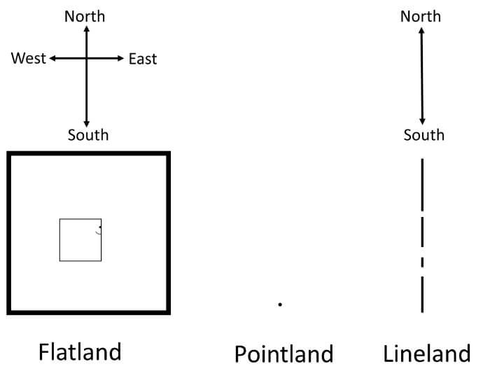

Data structures
You’ve now seen how R represents different data types, how to perform basic operations in R and define variables! It would now be worthwhile to discuss how these different data types can be stored.
Vectors

Previously, we saw how variables can be assigned using the <- operator. These singular values, whether of type numeric, character or logical, were scalars. As we advance beyond singular values in Pointland, we come to the vectors of Lineland. Vectors may store multiple values of some data type (scalars are therefore vectors of size 1). Creating vectors in R is as straightforward as c() (stands for concatenate). For example, myVector <- c(1,2,3) to create a vector of numeric elements 1,2,3. c() may also be used to concatenate two vectors together:
Filling vectors
To create a vector comprising a sequence of numbers, you can usestart:end. For example, myseq <- 1:10 will create a vector of size 10 with numbers between 1 and 10. You could also use seq(start,end,interval). Sometimes you may need to create a vector comprising a repeat value. To do so, use rep()`:
Let’s put these functions to good use! Please create the following vector as efficiently as possible:
[1, 1, 1, 1, 1, 1, 2, 2, 2, 2 ,2, 2, 4, 5, 6]
Note
Vectors may be of any data type but not a mixture. Combining them together will cause R to coerce data into one type. Try this out below. Which data types are dominant when they’re combined together?
Performing operations on vectors
All the operations we saw applied to scalar data may be applied between a scalar and a vector. Compared to writing a for loop, vectorization speeds up processing. For example,
start_time <- Sys.time()
Compared to writing a for loop to iterate through each
Converting between data types
When you tried to combine different data types together, R performed implicit coercion, namely, transformed the data without telling you. The programmer can also explicitly coerce data using conversion functions. One can then test whether a vector is of a specific type using logicals:
| Convert | Is of type |
|---|---|
| as.numeric | is.numeric |
| as.character | is.character |
| as.logical | is.logical |
| as.comple | is.complex |
| as.factor | is.factor |
Try converting the following and confirm whether the output matches you expectations.
Indexing
To select values from a vector, you’ll use [] notation. If you’re familiar with Python, you’ll know that it begins indexing at 0. In R, however, 1 corresponds to the first item in the vector, 2, the second, etc. Try returning the fourth element from the vector below
To return a subset of multiple values, you can use another vector listing indices of the elements you would like to return: vec[c(1,3,5)] will return the first, third and fifth elements, abd vec[1:5], the first 5.
Matrices and arrays
Stepping outside of Lineland, matrices take us into Flatland. Matrices have a dim property of size 2 and may be represented as (MxN), where M,N are natural numbers. Vectors are of type (Mx1). To create a matrix, one need not be a superintelligent race of machines. Instead, one simply uses matrix(). Specify the number of rows using the nrow argument and tell R whether you’d like to fill values by rows or columns, byrows. Using this knowledge try creating a 4x4 matrix with values betwen 1 and 16. Values should be organized by row.
Arrays now generalize matrices to higher dimensions. You may know these as tensors with dim = (M,N,O,…). Instead of matrix(), you’ll use array(). Now try creating a 2x4x2 array, with values also between 1 and 16
You can assign names to your matrix from a vector by using the functions rownames(matrix) and colnames(matrix). Just ensure it is of the same length as the number of rows/columns.
Manipulating matrices
Matrices can be manipulated in various ways. You may wish to perform an arithmetical operation that affects all the elements in the matrix, transpose the matrix, perform matrix multiplication (%*%), or get the Hamadard product of two matrices. We can tranpose using t()
mat <- matrix(1:9,nrow=3,byrow=TRUE)
print(mat) [,1] [,2] [,3]
[1,] 1 2 3
[2,] 4 5 6
[3,] 7 8 9mat_t <- t(mat)
print(mat_t) [,1] [,2] [,3]
[1,] 1 4 7
[2,] 2 5 8
[3,] 3 6 9We can index a matrix as we did a vector, but now incorporating an extra dimension: [M,N], where M corresponds to rows (dim 1) and N, columns (dim 2). Try extracting the element in the 3rd row and 2nd column and reassigning it to be 80
+ and - can be used between two equally sized matrices. * will perform elementwise multiplication, while %*% will perform matrix multiplication:
mat <- matrix(1:9,nrow=3,byrow=TRUE)
mat2 <- matrix(2:10,nrow=3,byrow=TRUE)
mat3a <- mat*mat2
print(mat3a) [,1] [,2] [,3]
[1,] 2 6 12
[2,] 20 30 42
[3,] 56 72 90mat3b <- mat %*% mat2
print(mat3b) [,1] [,2] [,3]
[1,] 36 42 48
[2,] 81 96 111
[3,] 126 150 174Lists
Lists allow you to store mixtures of data types, including other data structures. Theoretically, lists would support infinite regress, namely, lists nested within lists. One could think of lists like a strong nuclear force that allows other data structures to be bound together. For example,
You will have seen that each entry in the list was assigned a name. Just like when creating our matrix, names may also be assigned retroactively by using names(list):
Using [[]] notation will now point you to each data structure within the list. For example, to extract the first element from quark, one could use
Data frames
While these previous data structures are useful, perhaps the most essential structure from a data science perspective is the data frame. Data frames are 2D structures reminiscent of matrices but that allow different types of data to be stored in its columns. They are easy to ‘wrangle’: slice, subset, filter and mutate. Variables are typically stored in columns and entries, rows. Because data frames may contain numeric, factor, character and logical data, it is often useful to determine how R has coded your variables; you may need to recode them as something else, too (e.g. a character variable into a factor with discrete levels). To create a data frame, you will the base R function, data.frame(). Run ?data.frame() in your console to read more about the function.
Creating a data frame in R
Just as when we were creating a matrix from scratch, you will specify the heading names and values per variable in vector format. While data frames allow different data types across variables, just bear in mind that each variable will still be coerced to the same type. Let’s create a data frame below:
You can inspect the data type of each variable by using str(dataset). Just as we saw with lists, you can reference individual variable names using $ notation (e.g. dat$id will return a vector of IDs from the data frame). Try returning the type of data contained in each variable in dat below:
Now try changing the the group from a factor back into a numeric
Very good! In future tutorials, understanding how data are structured will serve you well on your jouRney to data science proficiency.